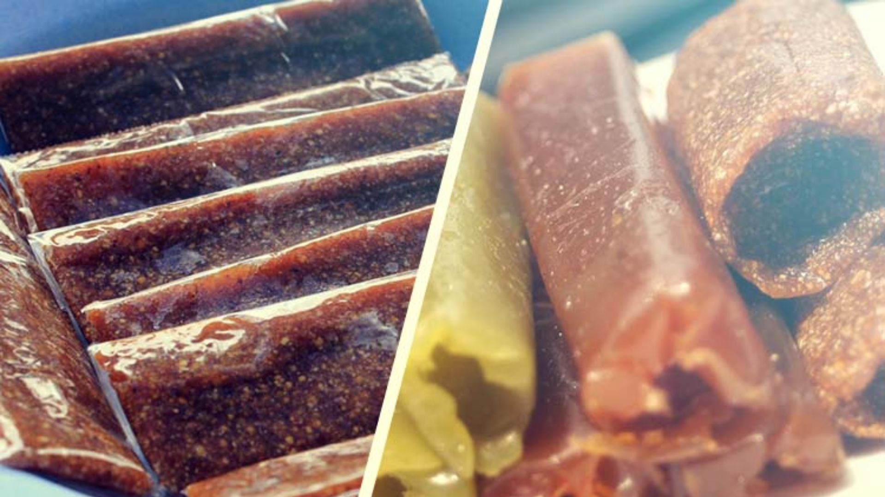
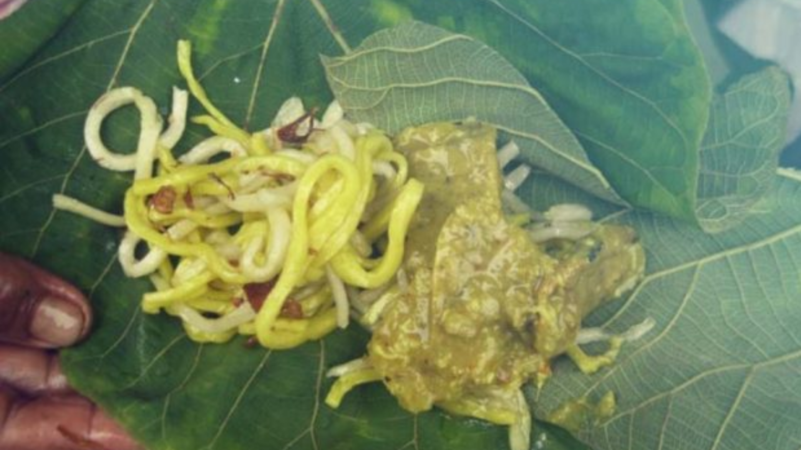

Karsikan and Jenang Dodol

Krasikan and jenang dodol are often found and sold in Tangkisan Village, Tawangsari district.
Jenang dodol is a food made from sticky rice and tastes sweet.
The production method still uses traditional methods, and is mostly a home industry for the local community.
Tempe Alakatak

Alakathak is made from tempe which is made from koro benguk and noodles made from starch.
Both ingredients are wrapped in teak leaves which are still green.
Alakathak is sold at traditional markets in and around Weru district.
this food is great eaten with chilies.
Gempol Pleret
Gempol pleret is a typical Sukoharjo drink made from rice flour which is made round,
served with added palm sugar / coconut and ice cubes which will add a fresh taste.
Gempol pleret is widely sold in Wirun Village, Mojolaban district.
❮
❯